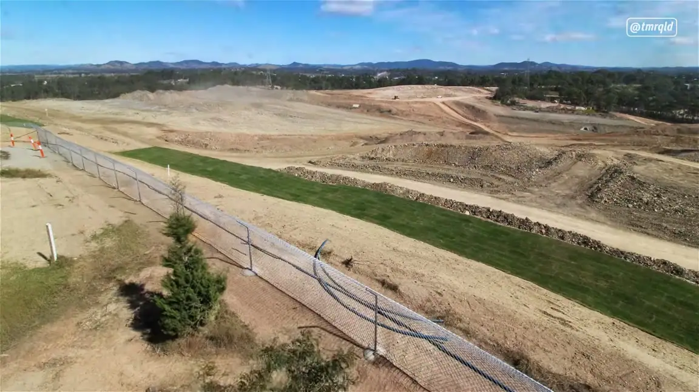

GROUND / JOURNEYConstruction scroll film
BRUCE HIGHWAYQueensland, Australia
i
เครดิตภาพ
TMRQld — Flood Road interchange · CC BY 3.0
ดัดช่วงวิดีโอและแปลงเป็นภาพ WebP สำหรับควบคุมด้วยการเลื่อนหน้า
ภาพจริง · ระยะเวลาก่อสร้าง 18 เดือน
จากผืนดิน
สู่เส้นทาง
เลื่อนเพื่อควบคุมภาพไทม์แลปส์จริงของการสร้างทางแยก Flood Road ตั้งแต่งานดินจนถนนเปิดเป็นรูปเป็นร่าง
↓เลื่อนลงเพื่อเดินหน้า · เลื่อนขึ้นเพื่อย้อนกลับ
Flood Road interchange
เส้นทางใหม่
เริ่มต้นแล้ว
หนึ่งสถานที่ หลายฤดูกาล และการเปลี่ยนแปลงที่มองเห็นได้ทุกครั้งที่เลื่อน